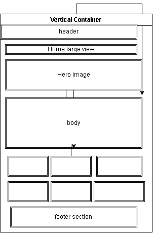
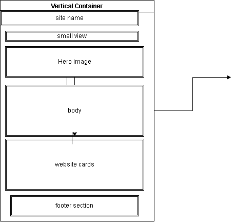

SADC Explorer - Discover Southern Africa WDD 231 project site plan | Thembinkosi Gumbo
1. Site Name
SADC Explorer
The name represents Southern African Development Community. It invites to discover the adventures of southern africa countries not just one country.
2. Site Purpose
The SADC Explorer provides destination information, travel planning tools and interactive features to tourist local and international.
3. Scenarios - Target Audience questions
Target audience: 15-80 years old local and international travelers
4. Color Scheme
Colors selected to reflect Southern African landscape - blue sky, green savanna, orange sunset, sand
blue sky - header background, footer and buttons
green savanna- hero image background
5. Typography
Body - Discover the breath taking of Victoria falls
headers
Main cards destination
6. Wireframe - Home page
Black and White for Mobile and desktop
Large and small view wireframe

